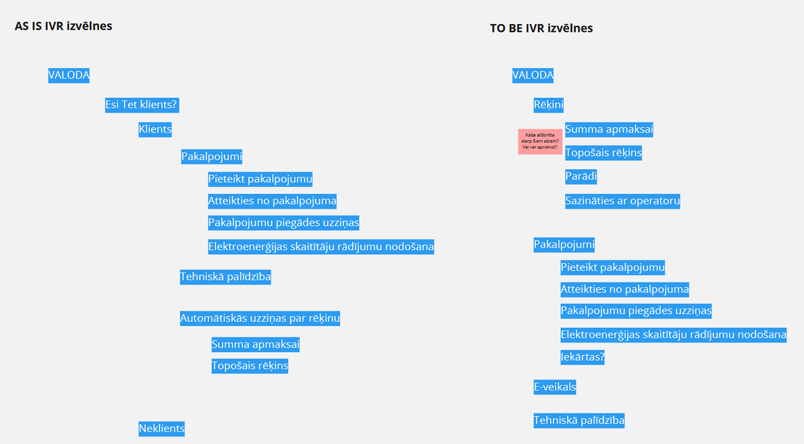
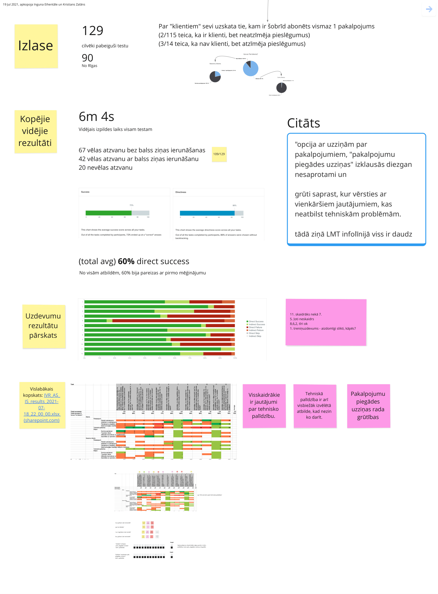

The Story
The problem hiding in plain data
Business analysts flagged it first: a third of calls landing in "technical issues" weren't technical at all. Customers couldn't find the right option, guessed, and ended up in the wrong queue. Agents were frustrated. Wait times were climbing. Customer satisfaction was quietly suffering.
We traced a big chunk of it to a structural issue: billing lived on a completely separate, non-obvious phone number. Users didn't know it existed, so they picked the closest-sounding option - which happened to be tech support.

Phase 1 & 2: Understanding the current state - properly
Before proposing anything, I wanted to understand exactly how bad things were. I audited a year's worth of call data, analysed the existing IVR scripts, ran competitor benchmarks, and mapped the quantitative patterns in misrouting.
Then I designed and ran a Treejack study to benchmark the current structure using closed card sorting - giving us a measurable baseline to test against. I worked closely with call centre colleagues throughout, because they knew things the data couldn't tell us.

Phase 3: Designing and validating the fix
The redesign wasn't about adding more options - it was about making the existing ones make sense. That meant renaming ambiguous categories so they matched how customers actually described their problem, consolidating redundant options, surfacing billing clearly, and reordering the flow based on call volume data rather than internal logic.
We tested the proposed structure with the same Treejack methodology as the baseline - so we could make a direct, apples-to-apples comparison. The improvement was unambiguous.